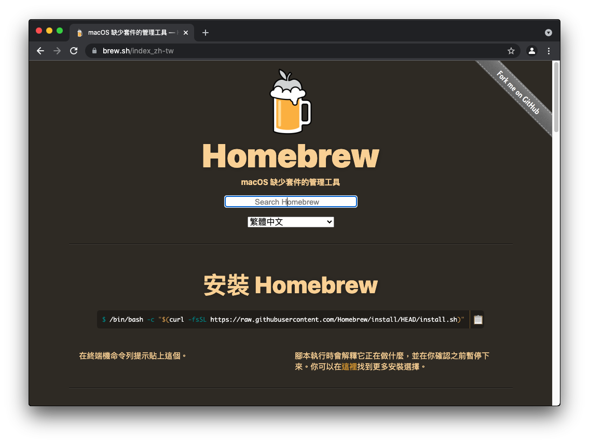
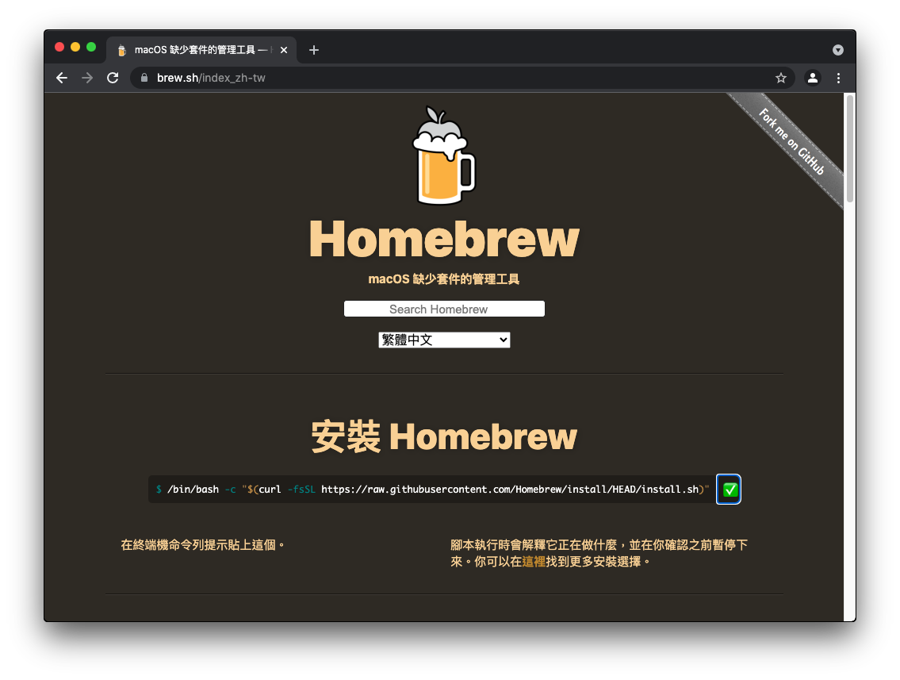
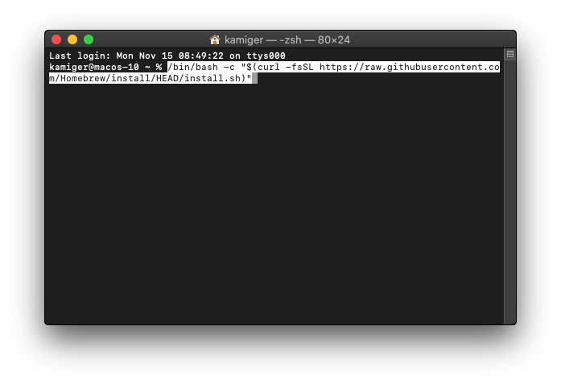
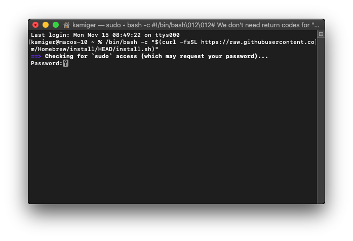
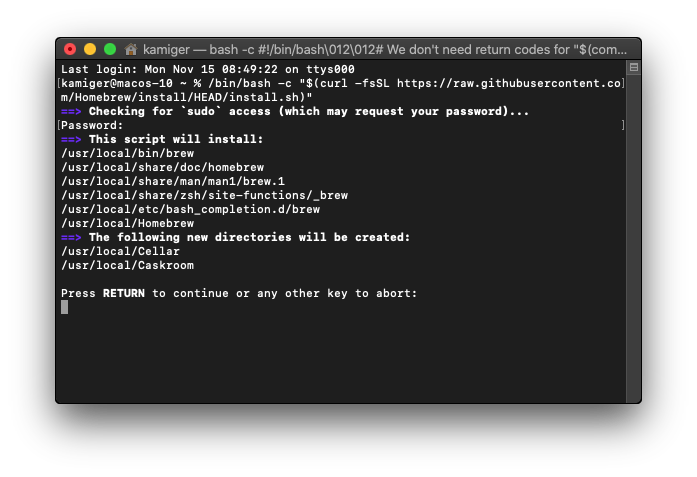
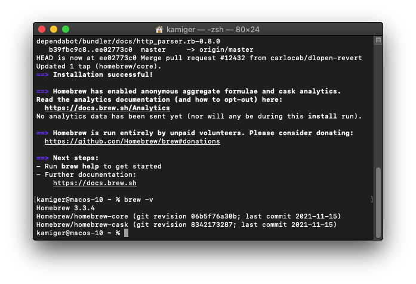

在 MacOS Catalina 安裝 Brew
開啟網頁 https://brew.sh/index_zh-tw：

點擊複製按鈕：

在終端機輸入 /bin/bash -c "$(curl -fsSL https://raw.githubusercontent.com/Homebrew/install/HEAD/install.sh)"：

按下 Enter：

輸入你登入 MacOS 時使用的密碼後，按下 Enter：

再次按下 Enter：

brew 安裝完成。
確認是否安裝完成
在終端機輸入 brew -v 查看版本：

如上圖即為安裝完成。